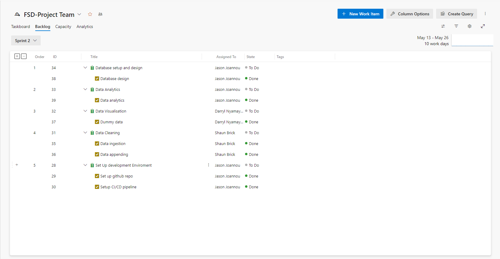

Sprints
Sprint Workflow
Our project follows an Agile development methodology, with work organized into iterative sprints. Each sprint is a time-boxed period, typically lasting two weeks, during which specific tasks and goals are completed. This approach allows for continuous delivery of incremental improvements and ensures that we can adapt to changes and feedback quickly.
Sprint Planning
Defining Sprint Goals
- At the beginning of each sprint, the team holds a sprint planning meeting to define the objectives for the upcoming sprint. These objectives are typically derived from the product backlog, which is a prioritized list of features, enhancements, and bug fixes.
- The team discusses and agrees on the most critical items to focus on, ensuring that the sprint goal aligns with the overall project objectives.
Task Breakdown and Estimation
- The selected sprint tasks are broken down into smaller, manageable units of work, often referred to as user stories or tasks. Each task is estimated in terms of effort, usually in story points or hours.
- The team collaboratively estimates the complexity and effort required for each task, considering factors like dependencies, risks, and potential challenges.
Assigning Tasks
- Once tasks are defined and estimated, they are assigned to team members based on their expertise, availability, and workload. Task assignments are flexible and can be adjusted as the sprint progresses.
Sprint Execution
Daily Standups
- Throughout the sprint, the team holds daily standup meetings, also known as daily scrums. These brief meetings allow each team member to share what they accomplished the previous day, what they plan to work on today, and any blockers or challenges they are facing.
- Daily standups foster communication, transparency, and collaboration among team members, ensuring that everyone is aligned and aware of the sprint's progress.
Task Progress and Updates
- As tasks are worked on, team members update the status in the project management tool (Azure Boards). This helps track progress, identify bottlenecks, and ensure that the sprint stays on track.
- Regular check-ins and communication are encouraged to address any issues promptly and to provide support where needed.
Sprint Review and Retrospective
Sprint Review
- At the end of each sprint, the team conducts a sprint review meeting. During this meeting, completed work is demonstrated to stakeholders, and feedback is gathered. This review helps ensure that the deliverables meet the expected quality and functionality.
- Stakeholders provide input, and any new requirements or changes are discussed and added to the product backlog if necessary.
Sprint Retrospective
- Following the sprint review, the team holds a sprint retrospective meeting. This meeting is an opportunity to reflect on the sprint, discussing what went well, what could have been improved, and what actions can be taken to enhance future sprints.
- The retrospective is a key aspect of continuous improvement, allowing the team to learn from each sprint and make adjustments to their process, tools, or communication strategies.
Benefits of Sprints
- Flexibility: Sprints allow the team to adapt to changes quickly, incorporating new requirements or feedback without disrupting the overall project timeline.
- Focus: By concentrating on a specific set of tasks each sprint, the team can deliver high-quality work and maintain a steady pace of progress.
- Continuous Feedback: Regular reviews and retrospectives ensure that the team receives continuous feedback, enabling them to make iterative improvements and deliver a product that meets stakeholder expectations.
Project Sprints
This section provides an overview of the project’s sprints and details the tasks accomplished during each sprint. The accompanying images showcase all the tasks included in the sprint backlog.
Sprint 1 (May 6 - May 12)
Sprint 2 (May 13 - May 26)
